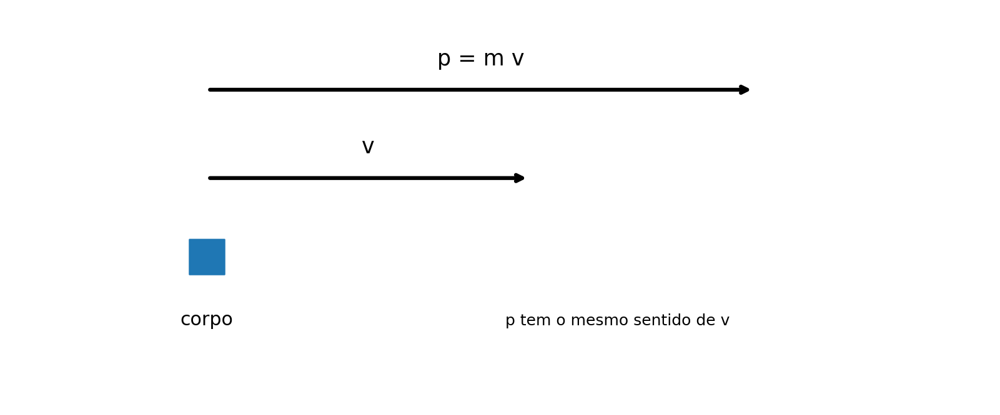
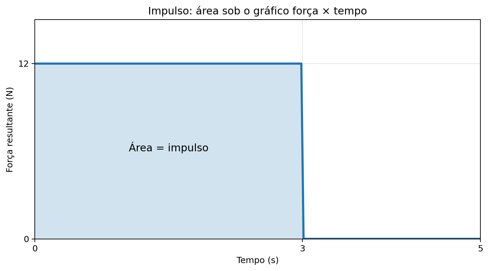
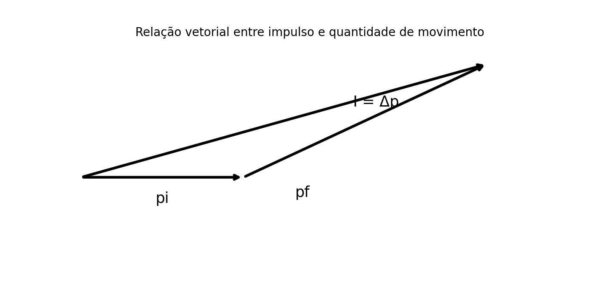

1º Ano | Aula 30: Impulso e Quantidade de Movimento
📚 Resumo
A quantidade de movimento de um corpo é uma grandeza vetorial dada pelo produto de sua massa pela velocidade. O impulso de uma força resultante corresponde à variação da quantidade de movimento que ela produz.
Para massa constante, o teorema do impulso estabelece que $\vec I=\Delta\vec p=\vec p_f-\vec p_i$. Em módulo, para força constante e colinear ao movimento, $I=F\Delta t$. A unidade no SI é N·s, equivalente a kg·m/s.
📖 Quantidade de movimento
1. Definição e características
A quantidade de movimento, também chamada de momento linear, mede o estado de movimento de um corpo. É definida por:
$$\vec p=m\vec v$$
Em que $m$ é a massa (kg), $\vec v$ é a velocidade (m/s) e $\vec p$ é a quantidade de movimento (kg·m/s). Como a massa é escalar positiva, o vetor $\vec p$ tem a mesma direção e o mesmo sentido da velocidade. Seu módulo é $p=mv$.

Figura 1: Para um corpo de massa positiva, quantidade de movimento e velocidade têm a mesma direção e o mesmo sentido.
2. Impulso de uma força constante
O impulso de uma força constante é o produto vetorial da força pelo intervalo de tempo durante o qual ela atua:
$$\vec I=\vec F\,\Delta t$$
O impulso tem a mesma direção e o mesmo sentido da força. No SI, sua unidade é N·s. Como $1\,\text{N}=1\,\text{kg·m/s}^2$, temos $1\,\text{N·s}=1\,\text{kg·m/s}$.
3. Força variável e gráfico força × tempo
Quando a força varia com o tempo, o impulso em uma dimensão é numericamente igual à área algébrica sob o gráfico $F\times t$. Áreas acima do eixo do tempo são positivas e áreas abaixo são negativas. Em mais de uma dimensão, o impulso é vetorial.

Figura 2: No intervalo de 0 a 3 s, a área retangular representa o impulso de uma força constante de 12 N.
4. Teorema do impulso e da quantidade de movimento
O impulso da força resultante aplicada a um corpo é igual à variação de sua quantidade de movimento:
Para massa constante, em uma dimensão, pode-se escrever $I=m(v_f-v_i)$. A equação é vetorial: sinais e sentidos devem ser considerados. Uma força resultante pode reduzir o módulo da velocidade, aumentá-lo ou mudar sua direção.

Figura 3: A variação vetorial da quantidade de movimento corresponde ao impulso resultante.
5. Sistemas e conservação da quantidade de movimento
Para um sistema de corpos, a quantidade de movimento total é a soma vetorial das quantidades de movimento individuais: $\vec P=\sum_i\vec p_i$. Se o impulso externo resultante sobre o sistema for nulo (ou desprezível) durante o intervalo analisado, a quantidade de movimento total se conserva: $\vec P_i=\vec P_f$.
As forças internas podem alterar as quantidades de movimento dos corpos individualmente, mas não alteram a quantidade de movimento total do sistema isolado. Em uma dimensão, os sinais positivos e negativos indicam os sentidos escolhidos. A conservação vale em colisões e explosões, desde que o impulso externo resultante seja desprezível.
6. Cuidados importantes
Quantidade de movimento e impulso são grandezas vetoriais.
Não confunda impulso com força: o impulso também depende do tempo de atuação.
Uma força intensa por pouco tempo pode produzir o mesmo impulso que uma força menor por mais tempo.
A conservação refere-se ao sistema completo e exige impulso externo resultante nulo ou desprezível.
O teorema do impulso vale mesmo quando a força resultante varia com o tempo.
💡 Física em Ação
Airbags e cintos de segurança
Em uma colisão, o ocupante precisa sofrer uma variação de quantidade de movimento. Aumentar o tempo de desaceleração reduz a força média necessária para produzir o mesmo impulso, diminuindo o risco de lesões.
Esportes com bola
Ao receber uma bola, o atleta pode acompanhar seu movimento com as mãos para aumentar o tempo de contato e reduzir a força média. Chutes e rebatidas produzem impulso ao alterar a quantidade de movimento da bola.
✅ 5 Questões Resolvidas (R 1 a 5)
R1: Quantidade de movimento de um carrinho
Enunciado: Um carrinho de massa $3{,}0\,\text{kg}$ move-se em linha reta com velocidade de $4{,}0\,\text{m/s}$ para a direita. Determine o módulo e o sentido de sua quantidade de movimento.
Resolução: Dados: $m=3{,}0\,\text{kg}$ e $v=4{,}0\,\text{m/s}$. Pela definição, $p=mv$. Assim, $p=3{,}0\times4{,}0=12\,\text{kg·m/s}$. Como a velocidade aponta para a direita, a quantidade de movimento também aponta para a direita.
R2: Impulso de uma força constante
Enunciado: Uma força horizontal constante de $20\,\text{N}$ atua durante $0{,}50\,\text{s}$ sobre um corpo. Calcule o módulo do impulso.
Resolução: Para força constante, $I=F\Delta t$. Substituindo: $I=20\times0{,}50=10\,\text{N·s}$. O impulso tem o sentido da força aplicada.
R3: Velocidade após a ação de uma força
Enunciado: Um corpo de massa $2{,}0\,\text{kg}$ move-se inicialmente a $3{,}0\,\text{m/s}$ para a direita. Uma força resultante constante de $4{,}0\,\text{N}$, também para a direita, atua durante $2{,}0\,\text{s}$. Determine a velocidade final.
Resolução: Adotando a direita como positiva, $I=F\Delta t=4{,}0\times2{,}0=8{,}0\,\text{N·s}$. Pelo teorema, $I=m(v_f-v_i)$. Logo, $8=2(v_f-3)$, então $v_f-3=4$ e $v_f=7{,}0\,\text{m/s}$. O sinal positivo indica movimento para a direita.
R4: Força média durante uma colisão
Enunciado: Uma bola de massa $0{,}20\,\text{kg}$ chega a uma parede com velocidade de $10\,\text{m/s}$ para a direita e retorna com velocidade de $6{,}0\,\text{m/s}$ para a esquerda. O contato dura $0{,}040\,\text{s}$. Determine o impulso da força resultante e a força média, adotando a direita como sentido positivo.
Resolução: Temos $v_i=+10$ e $v_f=-6{,}0\,\text{m/s}$. Então $I=m(v_f-v_i)=0{,}20(-6-10)=-3{,}2\,\text{N·s}$. O sinal negativo indica impulso para a esquerda. A força média é $F_m=I/\Delta t=-3{,}2/0{,}040=-80\,\text{N}$, também para a esquerda.
R5: Conservação da quantidade de movimento
Enunciado: Dois carrinhos estão inicialmente em repouso sobre trilhos horizontais de atrito desprezível. Após uma mola entre eles ser liberada, o carrinho A, de massa $2{,}0\,\text{kg}$, adquire velocidade de $3{,}0\,\text{m/s}$ para a direita. Determine a velocidade do carrinho B, de massa $3{,}0\,\text{kg}$.
Resolução: O sistema começa em repouso, portanto $P_i=0$. Como o impulso externo horizontal é desprezível, $P_f=0$. Adotando a direita como positiva: $m_Av_A+m_Bv_B=0$. Assim, $2(3)+3v_B=0$, de onde $v_B=-2{,}0\,\text{m/s}$. O carrinho B move-se para a esquerda.
✍️ 10 Questões Propostas (P 6 a 15)
P6: Quantidade de movimento
Enunciado: Um ciclista e sua bicicleta, com massa total de $80\,\text{kg}$, deslocam-se a $5{,}0\,\text{m/s}$. Determine o módulo da quantidade de movimento.
Enunciado: Dois corpos movem-se com a mesma velocidade. O corpo A tem massa de $2{,}0\,\text{kg}$ e o corpo B, $5{,}0\,\text{kg}$. Quantas vezes o módulo da quantidade de movimento de B é maior que o de A?
Gabarito: Como as velocidades são iguais, a razão é $p_B/p_A=m_B/m_A=5/2=2{,}5$.
P8: Impulso constante
Enunciado: Uma força resultante de $15\,\text{N}$ atua durante $0{,}20\,\text{s}$. Determine o impulso, incluindo sua direção e sentido em relação à força.
Gabarito: $I=F\Delta t=15\times0{,}20=3{,}0\,\text{N·s}$, no sentido da força.
P9: Variação da quantidade de movimento
Enunciado: Um objeto de massa $0{,}50\,\text{kg}$ tem sua velocidade alterada de $2{,}0$ para $8{,}0\,\text{m/s}$ no mesmo sentido. Calcule o impulso resultante.
Enunciado: Um automóvel de massa $1000\,\text{kg}$ move-se a $20\,\text{m/s}$ e para em $5{,}0\,\text{s}$. Determine o impulso resultante e a força média de frenagem.
Gabarito: $I=\Delta p=1000(0-20)=-2{,}0\times10^4\,\text{N·s}$. A força média é $F_m=I/5=-4{,}0\times10^3\,\text{N}$; o sinal negativo indica sentido contrário ao movimento inicial.
P11: Rebote
Enunciado: Uma bola de $0{,}15\,\text{kg}$ atinge uma superfície com velocidade de $12\,\text{m/s}$ para baixo e retorna a $8{,}0\,\text{m/s}$ para cima. Determine a variação de quantidade de movimento, adotando para cima como positivo.
Gabarito: $v_i=-12$ e $v_f=+8\,\text{m/s}$. Então $\Delta p=0{,}15[8-(-12)]=3{,}0\,\text{kg·m/s}$, para cima.
P12: Área no gráfico força-tempo
Enunciado: Uma força constante de $10\,\text{N}$ atua durante $4{,}0\,\text{s}$. Determine o impulso pelo cálculo da área no gráfico $F\times t$.
Gabarito: A área retangular é $I=10\times4=40\,\text{N·s}$.
P13: Explosão em duas partes
Enunciado: Um objeto inicialmente em repouso explode em dois fragmentos. Um fragmento de massa $1{,}0\,\text{kg}$ adquire velocidade de $6{,}0\,\text{m/s}$ para a direita. O outro tem massa $2{,}0\,\text{kg}$. Determine sua velocidade.
Gabarito: $P_i=0$ e $P_f=1(6)+2v=0$. Portanto, $v=-3{,}0\,\text{m/s}$, para a esquerda.
P14: Sistema isolado
Enunciado: Explique por que as forças internas de interação não alteram a quantidade de movimento total de um sistema isolado, embora possam alterar a quantidade de movimento de cada corpo.
Gabarito: As forças internas aparecem em pares de ação e reação, com impulsos iguais e opostos. Assim, suas contribuições se cancelam na soma do sistema; sem impulso externo resultante, o momento total permanece constante.
P15: Segurança no impacto
Enunciado: Explique, usando o teorema do impulso, por que aumentar o tempo de colisão por meio de um airbag pode reduzir a força média sobre o ocupante, para uma mesma variação de quantidade de movimento.
Gabarito: Para a mesma variação de quantidade de movimento, $F_{m}=\Delta p/\Delta t$. Ao aumentar o tempo de colisão, diminui o módulo da força média.
🎓 5 Questões de Teste (T 16 a 20)
T16 (ExataSite): definição
Enunciado: A quantidade de movimento de um corpo é determinada pelo produto entre:
A) força e tempo.
B) massa e velocidade.
C) massa e aceleração.
D) força e deslocamento.
E) energia e tempo.
Gabarito: {ans}. Resolução: {sol}
T17 (ExataSite): unidade
Enunciado: No Sistema Internacional, a unidade de impulso é:
A) N.
B) J.
C) kg.
D) N·s.
E) W.
Gabarito: {ans}. Resolução: {sol}
T18 (ExataSite): teorema do impulso
Enunciado: O impulso da força resultante sobre um corpo é igual:
A) à energia cinética final.
B) à massa do corpo.
C) à variação da quantidade de movimento.
D) ao produto da massa pela aceleração.
E) à velocidade média.
Gabarito: {ans}. Resolução: {sol}
T19 (ExataSite): conservação
Enunciado: Um sistema inicialmente em repouso explode em fragmentos. Se o impulso externo resultante for desprezível, a quantidade de movimento vetorial total dos fragmentos:
A) é nula.
B) é sempre positiva.
C) aumenta com o número de fragmentos.
D) depende apenas da massa maior.
E) é igual à energia liberada.
Gabarito: {ans}. Resolução: {sol}
T20 (ExataSite): segurança
Enunciado: Para uma mesma variação da quantidade de movimento, aumentar o tempo de colisão tende a: